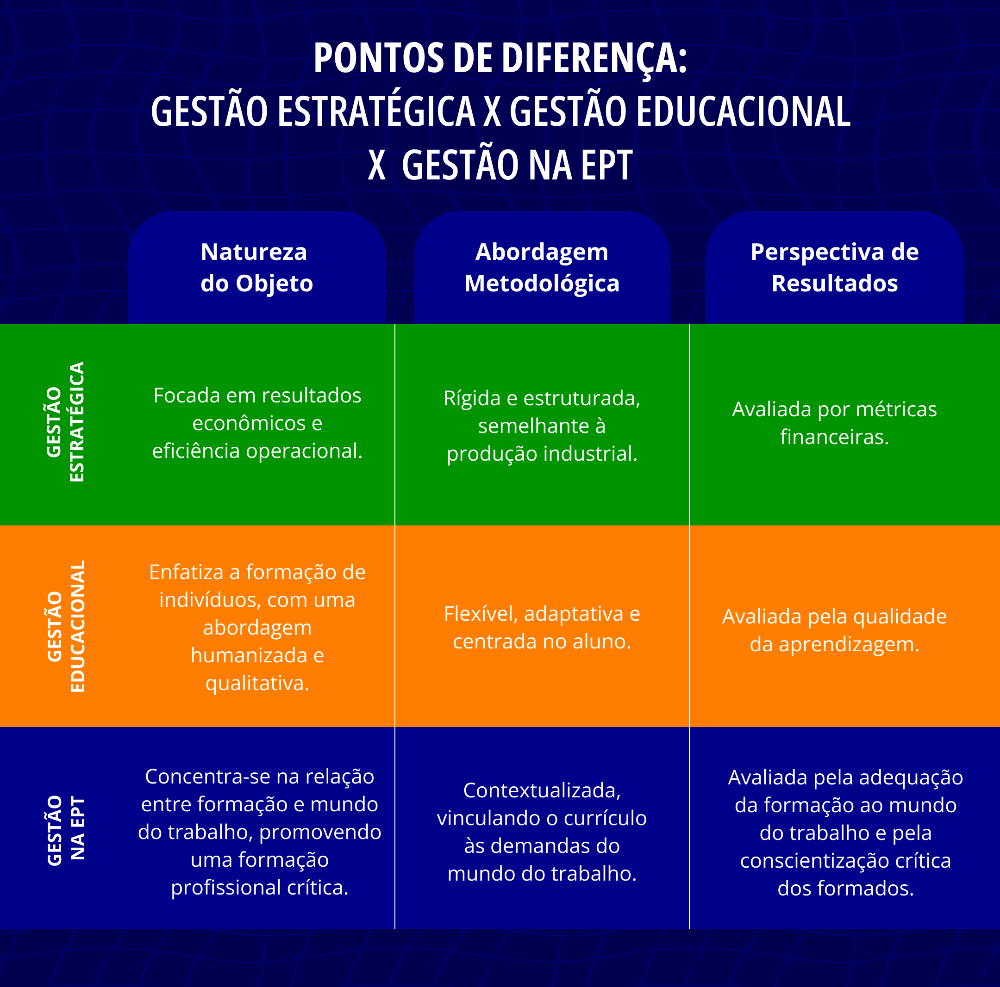
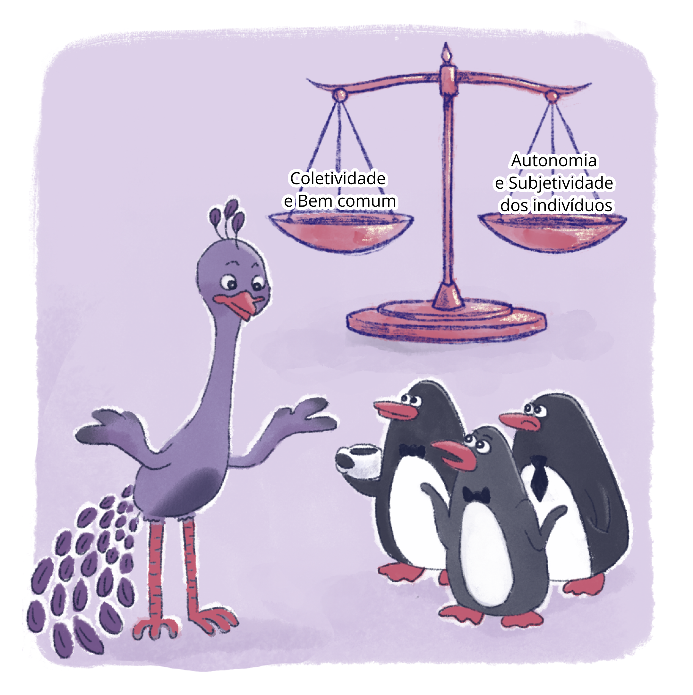

Capítulo 3
Gestão Democrática e Representatividade: quem faz o quê?
Inicialmente, precisamos retomar a polissemia da palavra “gestão”, considerando as nuances da Educação Profissional Tecnológica (EPT). Numa primeira acepção, gestão é a racionalização dos processos para a eficiência, mas não apenas dentro da lógica taylorista. A eficiência, neste caso, tem a ver com a garantia de que os direitos fundamentais sejam de fato considerados, respeitados e promovidos. Gestão é muito mais uma atitude de estímulo à responsabilidade, à participação e, no caso especial da EPT, à autonomia dos envolvidos do que propriamente a metodologia de processos. A gestão democrática em EPT precisa afastar-se do que denominamos como gerencialismo.
Do lado da escola e da educação, o gerencialismo também faz sua entrada pela porta da frente, sob a batuta das alegações de que ambas precisam melhorar em eficiência e eficácia. Alevantam-se, assim, as dúvidas sobre como pensar e justificar o trabalho como referência para a formação e a democracia se a razão instrumental e utilitarista do gerencialismo conduz à fabricação da alienação e do estranhamento
A gestão, no caso da EPT, é pressuposto fundamental que visa fomentar a participação mais efetiva de todos os sujeitos nas ações e decisões que envolvem a todos. Não se trata, aos moldes de Maquiavel, de apenas formar lideranças que possam manter-se no poder, mas assegurar que a legitimidade do poder se assenta na garantia do envolvimento amplo e irrestrito de todos nos processos de ponderação e de tomada de decisão. Antes de ser um tema de filosofia política, ou mesmo da ciência política, a governança de vontades deve estar completamente alinhada aos propósitos e finalidades da instituição e não o inverso – cenário no qual a instituição se tornaria refém das ações e decisões particulares que aspiram apenas o bem-estar privado.
Gestão de quê?
Remontando a proposta aristotélica, a gestão, em si, é um olhar de todos para a distinção constante entre meios e fins, preço e valor, investimento e despesa. O exercício do poder em uma gestão democrática deve considerar a premissa de que todas as pessoas envolvidas tenham consciência do grau de impacto das decisões coletivas, bem como de suas individualidades. A gestão não pode ser reduzida a uma instrumentalização de pessoas e dos processos, priorizando apenas a perspectiva econômica, como no caso do Taylorismo, Fordismo e Toyotismo, exemplos que vimos anteriormente.
Do mesmo modo, a gestão como processo de racionalização – e não de negação da razão – precisa ser pensada e implementada considerando as diferenças entre a gestão, gestão educacional e gestão na EPT.
É preciso priorizar ações que realmente qualifiquem os processos e fluxos e melhorem o acesso, a permanência e êxito de nossos estudantes. Isso é diferente da racionalização dos processos de uma empresa que visa a produção e o lucro, por exemplo, ou mesmo a oferta de serviços como terceiro setor. O fim de uma instituição da EPT está muito claramente expresso tanto na lei de criação dos Institutos Federais, por exemplo, como em suas bases conceituais. Portanto, todos os desafios e obstáculos que forem se apresentando em termos de gestão e de fluxos não devem nem podem ser motivo para perdermos de vista o objetivo principal das instituições públicas de EPT, que é a formação pública, gratuita e de qualidade. E mais: com uma formação politécnica, omnilateral e que dialogue com a produção do conhecimento, com a evolução da ciência e da tecnologia, com a dialética da cultura e do mundo do trabalho. Esse viés crítico prioriza a formação crítica, criativa e cidadã, para que nossos egressos não aceitem ser explorados e, se na condição de instância decisória, não sejam exploradores do ofício alheio.
Quando falamos em gestão educacional, precisamos retomar o sentido de que não se trata de um processo fabril ou algo que opera somente no mensurável; educação não é produto, não é coisa e, portanto, não pode ser concebida numa perspectiva fordista da produção em série. Ela deve ser compreendida como um processo lento, gradual e reflexivo de constituição de sujeitos pela relação estabelecida entre pessoas, conhecimentos, métodos e processos.
No caso da gestão na EPT, as implicações teóricas e práticas são ainda mais complexas. Isso ocorre porque é fundamental a apropriação da categoria mundo do trabalho, em contrapartida ao mercado de trabalho, da mesma forma que é imprescindível a apreensão do conceito de trabalho em si – e o sentido deste na construção da sociedade e da realização individual das pessoas. A gestão na EPT não segue o mesmo mote teórico e prático da gestão em geral e também não pode ser diluída no bojo comum da educação formal, considerando as suas peculiaridades, natureza e finalidade. Verifique as diferenças entre as gestões:

Título: Tipos de gestão e suas características
Fonte: Prosa (2024a).
O caminho mais seguro para corrigirmos os rumos de toda e qualquer democracia é a representatividade. Ou seja, que todos os segmentos, setores, serviços e sujeitos sejam considerados como premissa para as tomadas de decisões. Retomemos as reflexões de, que, em sua obra O Espírito das Leis (1996), concebe a racionalidade como o espírito, o sentido, o papel, a base e o fundamento das leis. Para ele, a racionalidade atua como antídoto para que os poderes (Legislativo, Judiciário e Executivo) tencionem uns aos outros sem que haja ingerência de um sobre o outro, assegurando, ao mesmo tempo, plena liberdade em suas atuações. Na EPT, podemos ponderar a noção de racionalidade como um ponto de partida, como possível ponto de chegada, mas, sobretudo, como atitude de processos mediadores, para que consigamos operar com parcimônia as tensões entre o que é fundamental no indivíduo e o que é necessário para a sobrevivência da instituição.
Na obra Antropologia para Administradores (2003), a professora brasileira Neusa Cavedon traz para a reflexão a metáfora dos pinguins e do pavão. Os pinguins, cansados da mesmice entre eles, contrataram um pavão para liderá-los, mas aos poucos foram transformando o pavão em pinguim. Ou seja, se incorrermos numa visão autoritária e na anulação dos indivíduos (situação na qual os pinguins determinam que o pavão seja um pinguim), não permitiremos que as subjetividades possam ser livres e diferentes, o que seria um desastre para uma gestão democrática.
Por outro lado, as instituições não estariam cumprindo seu papel se transformassem a gestão em modos de subjetivação, mecanismos de controle, vigilância e punição, como no panóptico de . Em contrapartida, se cada indivíduo impõe suas convicções e demandas imediatas ao todo da instituição, temos a negação gradativa dos princípios do bem comum, o que de muitos modos inviabilizaria a vida em coletividade. Então, para contornar isso, o segredo parece ser a justa medida entre o excesso e a falta. Um caminho intermediário em que todos se sintam contemplados de alguma forma, mas sem perdermos o horizonte do propósito fim de uma instituição. Observe abaixo uma ilustração que retrata a metáfora dos pinguins e do pavão:
.png) Título: Michel Foucault Fonte: Arquivo Nacional (1974). Elaboração: Prosa (2024c).
Título: Michel Foucault Fonte: Arquivo Nacional (1974). Elaboração: Prosa (2024c).

Título: Pinguins e pavão
Fonte: Prosa (2024d).